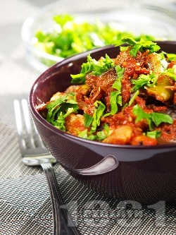
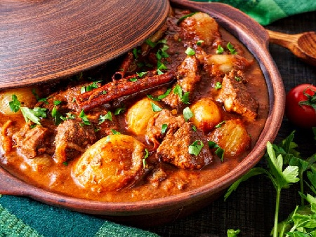

Veal casserole with mushrooms, peppers and oven-baked white rice

For 6 portions:
- 1 kg veal
- 1/2 kg mushrooms
- 1/2 kg tomatoes
- 3 onions
- 4 green peppers
- 1/2 cup white wine
- 6 tbs oil
- 1/2 bunch parsley
- 1 tsp paprika
- salt
Method of preparation:
The beef (1 kg) is cut into large pieces and stewed in the oil (6 tbs) and a little water, then taken out. In the same fat
the finely chopped onion (3), the coarsely chopped mushrooms (1/2 kg) and half of the grated tomatoes are stewed. The red one is added
pepper (1 tsp). Put the meat back, add the chopped green peppers (4 pieces) and the wine (1/2 tsp), pour hot water and
after boiling it is salted. After 15 minutes, transfer the dish to a tray, add the remaining tomatoes and rice (1/2 tsp) and bake in
moderate oven. The finished casserole is sprinkled with finely chopped parsley (1/2 bunch).
Preparation time: 80 minutes

Calories and nutritional value
Portion 515 g
Calories 407 calories
Carbs 30 g 30%
Fats 13 g 30%
Protein 41 g 41%
Cholesterol 130 mg